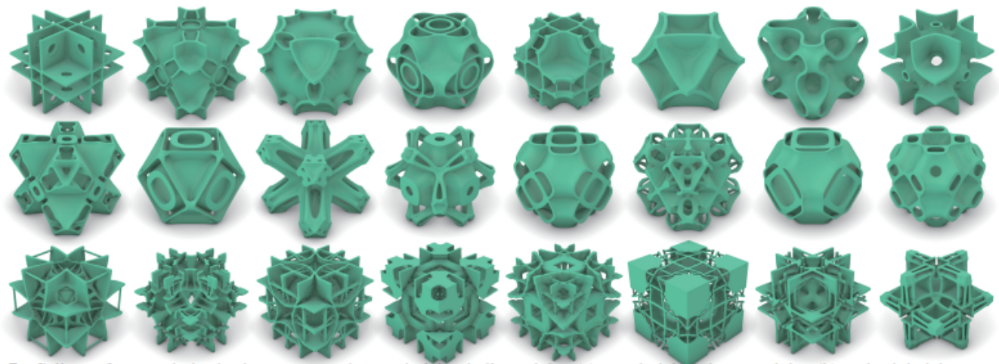
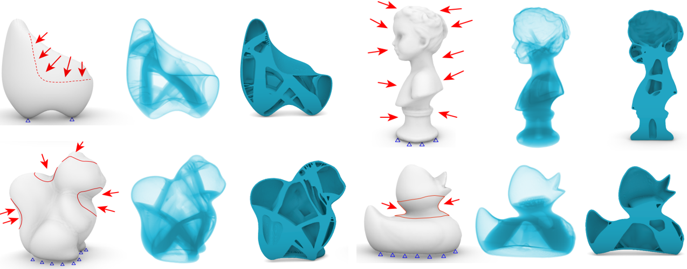
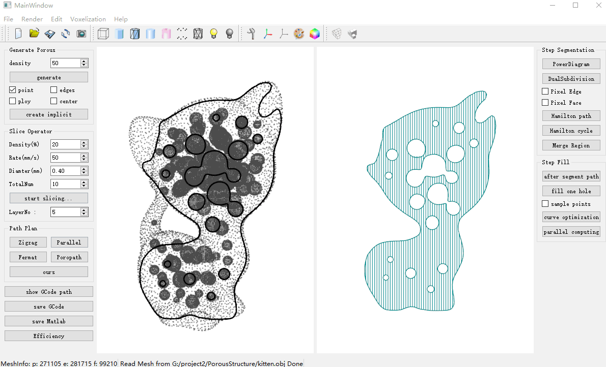
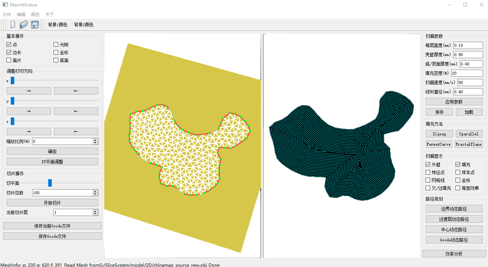
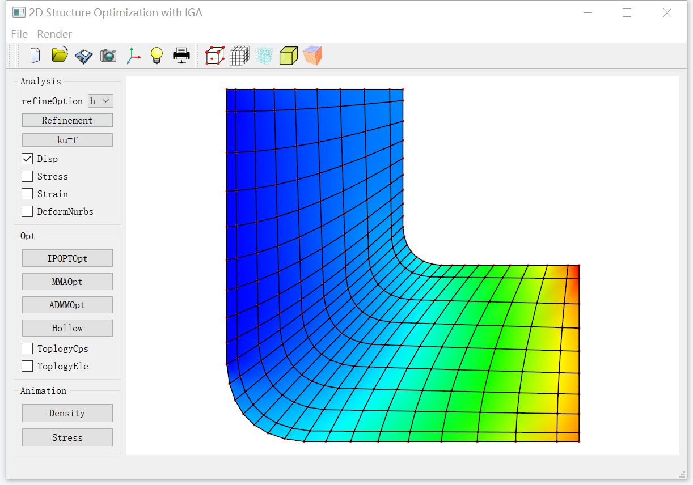
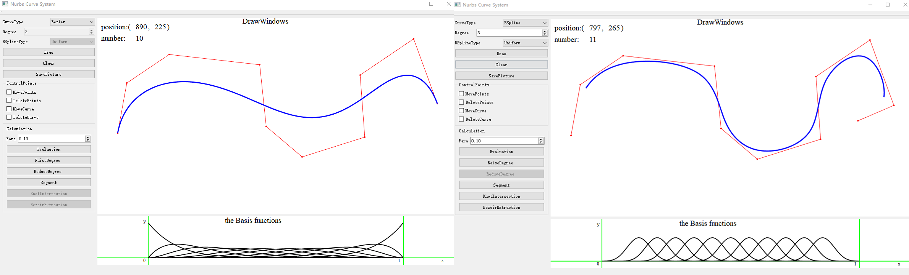
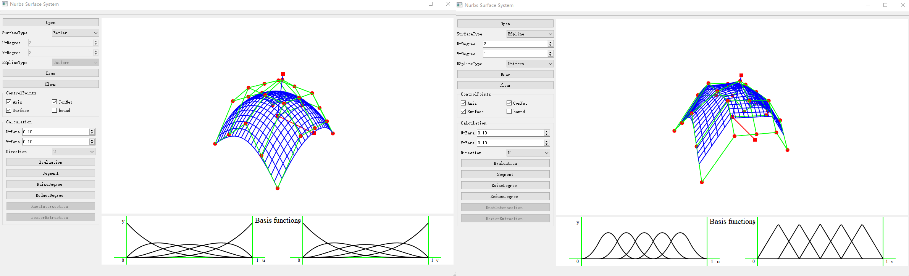

Open Source Code & Data
An Optimized, Easy-to-use, Open-source GPU Solver for Large-scale Inverse Homogenization ProblemsWe propose a high-performance GPU solver for inverse homogenization problems to design high-resolution 3D microstructures. Central to our solver is a favorable combination of data structures and algorithms, making full use of the parallel computation power of today’s GPUs through a software-level design space exploration. This solver is demonstrated to optimize homogenized stiffness tensors, such as bulk modulus, shear modulus, and Poisson’s ratio, under the constraint of bounded material volume. Practical high-resolution examples with 512^3 ≈ 134.2 million finite elements run in less than 40 seconds per iteration with a peak GPU memory of 9 GB on an NVIDIA GeForce GTX 1080Ti GPU. Besides, our GPU implementation is equipped with an easy-to-use framework with less than 20 lines of code to support various objective functions defined by the homogenized stiffness tensors.

|
Large-Scale Worst-Case Topology OptimizationWe propose a novel topology optimization method to efficiently minimize the maximum compliance for a high-resolution model bearing uncertain external loads. Central to this approach is a modified power method that can quickly compute the maximum eigenvalue to evaluate the worst-case compliance, enabling our method to be suitable for large-scale topology optimization. After obtaining the worst-case compliance, we use the adjoint variable method to perform the sensitivity analysis for updating the density variables. By iteratively computing the worst-case compliance, performing the sensitivity analysis, and updating the density variables, our algorithm achieves the optimized models with high efficiency. The capability and feasibility of our approach are demonstrated over various large-scale models. Typically, for a model of size 512×170×170 and 69934 loading nodes, our method took about 50 minutes on a desktop computer with an NVIDIA GTX 1080Ti graphics card with 11 GB memory.

|
Path Planning Generation System[Project Code / To be released] Porous structures are widely used in our daily life due to their special properties such as higher rigidity and lightweight. With the popularity of additive manufacturing (AM), producing porous structures by AM shows great advantages over traditional manufacturing technologies. In this paper, we first introduce a framework to model a type of porous structures which contain lots of small holes. Then we propose an efficient path planning algorithm for this type of porous structures. The algorithm consists of the following steps: for each slice of a porous structure, we first subdivide the domain of the slice into subdomains by generalized Voronoi diagram such that each subdomain contains exactly one hole, and then we carry out dual operation to obtain a partition of the domain into a set of subregions. A route is then found to traverse every subregion by solving a traveling salesman problem (TSP) using genetic algorithm (GA), and along the route subregions are merged into larger ones to improve printing efficiency. Finally we fill each merged subregion with a single Fermat spiral curve and further optimize smoothness and uniformity of the filling path. We demonstrated a variety of testing examples and the experimental results showed the superiority and effectiveness of our method in terms of material cost, printing time and structure stability.

Porous Path Planning Generation System  Fractal Path Planning Generation System |
Isogeometric Analysis Tools for Mechanical Analysis & Topology Optimization[Project Code / To be released] This system shows topology optimization based on isogeometric analysis. It includes: equilibrium equation calculation, the visualization of displacement, equivalent stress, equivalent strain, structural deformation.

|
Basic NUBRS Tools for Calculation Operation[Project Code / To be released] I developed a series of spline curve and surface tools. Including Bezier curve/surface, B-spline curve/surface user interaction design in my PhD period.

Curve System  Surface System |
Feel free to download! Enjoy your coding journey!
If there is any problem whiling using, please send a message to [ xiaoyazhai@ustc.edu.cn ]
© USTC GCL